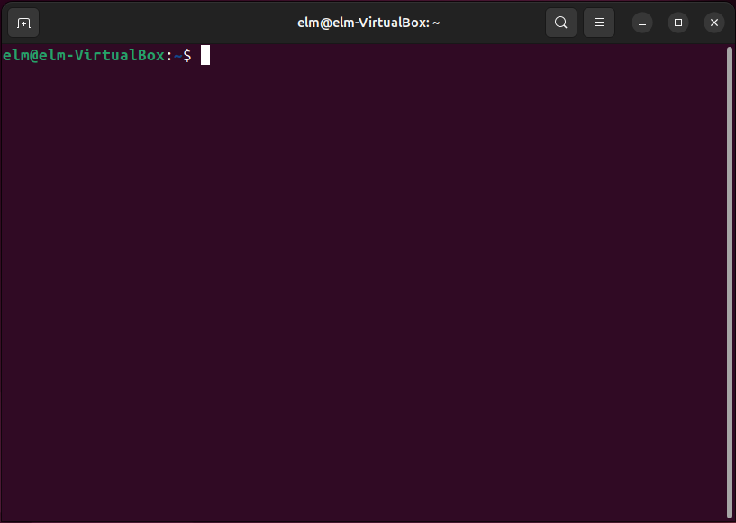

De terminal is een venster waarin je een commando typt en het antwoord terugleest. Er zijn geen knoppen, geen keuzerondjes en geen vinkvakjes: alles gebeurt met tekst. Ubuntu heeft daarnaast een gewoon bureaublad met vensters, maar veel van wat je als beheerder doet, staat alleen in de terminal, en op een server of een embedded system is er vaak niets anders.

De regel waar je op typt heet de prompt, en ze zegt vier dingen voor je één toets hebt ingedrukt.
| Deel | Wat het zegt |
|---|---|
elm |
De gebruiker onder wiens naam de commando's uitgevoerd worden |
elm-VirtualBox |
De naam van de machine. Werk je op meerdere machines tegelijk, dan zie je hieraan op welke je typt |
~ |
De map waar je op dit moment staat. De tilde is de persoonlijke map van de gebruiker,
hier /home/elm |
$ |
Je werkt als gewone gebruiker. Werk je als root, dan staat er # |
Het derde deel verandert mee terwijl je werkt. Ga je naar een map onder je persoonlijke map, dan groeit
de tilde aan tot ~/automatisering, en sta je ergens anders op de schijf, dan staat het
volledige pad er: /home of /etc. Zo weet je waar een commando zonder pad
terechtkomt zonder er iets voor te moeten intypen.
Een commando dat je bijna juist typt, werkt niet bijna. Er zijn drie manieren waarop dat misgaat, en ze leveren alle drie een foutmelding op die niet zegt wat er scheelt.
Hoofdletters tellen mee. ls is een commando en LS bestaat
niet. Dat geldt niet alleen voor commando's maar ook voor namen van bestanden en mappen: in Linux zijn
verslag1.doc en VERSLAG1.doc twee verschillende bestanden, die naast elkaar in
dezelfde map kunnen staan. In Windows kan dat niet.
Spaties scheiden. De terminal knipt je regel op de spaties in stukken, en het eerste
stuk is de naam van het commando. ls -alh is dus het commando ls met
-alh erachter, terwijl ls-alh een commando met die volledige naam zoekt en
niets vindt. Om dezelfde reden zet je een bestandsnaam met een spatie erin tussen aanhalingstekens.
Streepjes staan er niet toevallig. Een optie begint met een koppelteken, en dat is het gewone koppelteken van je toetsenbord. Kopieer je een commando uit een tekstverwerker, dan is dat teken soms stilzwijgend vervangen door een langer streepje, en dan faalt het commando terwijl het er goed uitziet.
Typ de eerste letters van een map of een bestand en druk op TAB. Bestaat er maar één naam die zo begint, dan vult de terminal de rest aan. Dat spaart tijd en het maakt een tikfout in een naam onmogelijk.
De terminal houdt de commando's bij die je ingegeven hebt. Met pijl omhoog en
pijl omlaag loop je door die lijst, en het commando dat verschijnt kan je aanpassen voor je
op ENTER drukt. Een lang commando waar één optie aan ontbrak, haal je zo terug in plaats van
het opnieuw te typen. Wil je de hele lijst zien, dan geef je het commando history.
Staat er een commando op je regel dat je toch niet wil uitvoeren, dan breek je het af met
CTRL+C. Dezelfde toetsencombinatie stopt ook een commando dat al bezig is en te lang duurt.
Met clear maak je het venster leeg; wat je getypt hebt blijft dan gewoon in de geschiedenis
staan.